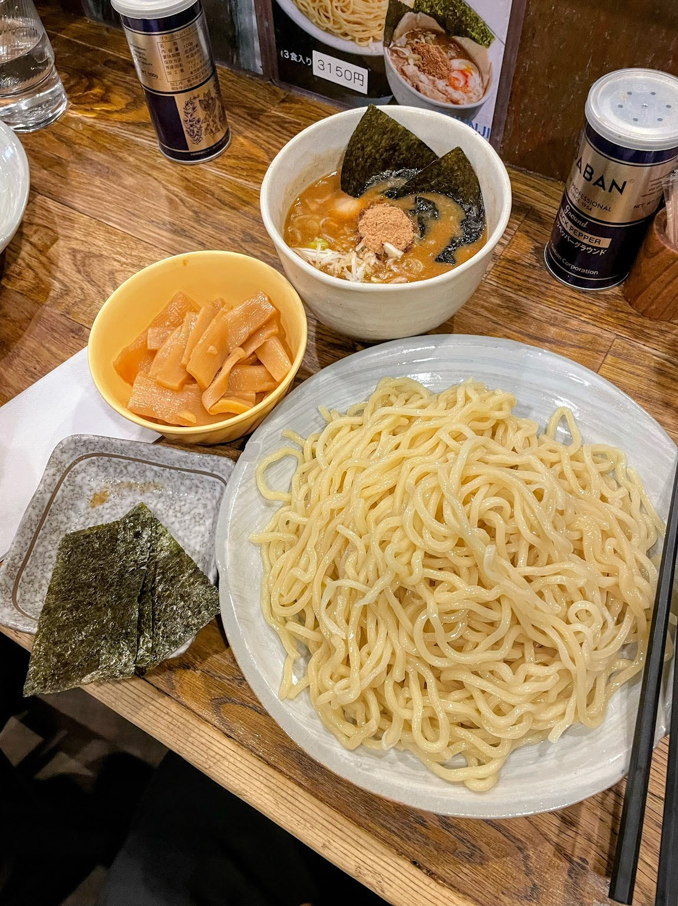

Tsukemen Recipe

Description
Tsukemen is a type of ramen where the noodles are served separately from the broth. The noodles are typically cold and are dipped into a hot and flavorful broth before eating. This dish is often served with toppings such as green onions, bamboo shoots, and a soft-boiled egg.
Ingredients
- 4 L water
- 1.5 kg/3 lb pork bones, a mix of femurs and necks
- 1.5 kg/3 lb chicken backs
- 0.5 kg/1 lb chicken feet
- 1 kg/2.5 lb belly and skin and ribs, or 0.5 kg/1 lb ribs, and a 1 kg/2 lb pork belly roast, with skin included
- 1 yellow onion, peeled and quartered
- 1 5-cm/2-in piece of ginger, peeled and sliced into 0.5 cm/0.25 in coins
- 10 garlic cloves
- 20 g kombu
- 80 g niboshi
- 50 g thick-cut katsuobushi
- 50 g thick-cut sababushi
- 30 g gyofun (fish powder)
Steps
- Add your water and pork bones to a pressure cooker, at least an 8-quart size cooker, but preferably 10-quart.
- Bring to a boil, and skim the scum, until little to none rises, around 20 minutes.
- Cover, bring to high pressure, cook for 1 hour.
- Meanwhile, deskin the pork belly, roll into a cylinder. If attached to the ribs, cut along the ribs to remove the belly first.
- While cooking, remove the toenails of the chicken feet.
- Open the pressure cooker using the fast release setting, add the chicken backs, chicken feet, tied pork belly, ribs, and pork belly skin.
- Close the pressure cooker, bring to high pressure, cook for 1 hour.
- Fast release again, open the pressure cooker, remove the pork belly roll, and reserve for chashu.
- Add the onion, ginger, and garlic. Boil for 1 hour uncovered. Add water as needed to keep things submerged, but some evaporation is expected.
- Strain the soup, reserving the pulp of bones and meat and vegetables. Do not discard pulp.
- Dig through the pulp to remove large bones, like femurs, or extra chunky neck bones. You’ll notice at this stage that the bones are quite brittle and can break under pressure. Any bones you can crumble in your fingers are good to keep.
- Blend 2/3rds the bones, meat, vegetables, in a blender, with enough soup to make a slurry.
- Add the slurry back to the strained soup. Mix to combine. Yields 3.5 L, add or boil water to get to this level.
- Add the slurry to a large pot, and add kombu and niboshi. Heat to below simmer (around 80-90 °C/176-194 °F), and allow it to steep for 20 minutes.
- Discard kombu, bring the soup to a simmer, and add remaining ingredients (katsuobushi, sababushi, and gyofun).
- Remove from heat, steep 15 minutes. Stir frequently to prevent burning on the bottom of the pot, as the sludge can settle and scorch.
- Strain soup through a porous strainer to remove fish, pressing on pulp to ensure full extraction.